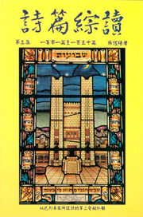

|
|
【詩篇一百三十三篇】 |
|
|
看哪，弟兄和睦同居，是何等的善，何等的美！ |
|
|
|
|
|
|

世紀頌讚465首(Psalm 133) 看哪，弟兄和睦同居，是何等的善，何等的美 https://youtu.be/Nk243EFhQZE -
戴浩輝博士 教 希伯來詩歌 詩篇一百三十三篇1節看哪、弟兄和睦同居、是何等的善、何等的美
https://www.youtube.com/watch?v=Ps3CZ6u8fPE
詩篇綜讀 蘇佐揚著
蘇佐揚著 基督教天人社
許多年前，我就喜歡唱天人詩歌。經過許久的顛沛流離，也包括靈命上的起落，有些至今還記得詞和調，不知不覺就在口中或心�堸�着，得着不少幫助。約在那時候，跟朋友談起這詩的作者。他說：“這些詩歌宋尚節佈道的時代就普遍唱了，作者不可能仍在人間。”作為井底之蛙，我只能同意接受當真。
在新加坡，有機會見到天人詩歌的作者，蘇佐揚牧師。他只是半百青春：以為其人在天上，原來是在人間！免不了相與大笑。後來，才知道：他與宋尚節博士“同工”的故事，是當他還是十五六歲作孩子的時候，常在宋的佈道會中司琴，可見其天賦恩賜的高。
陸續看過他的專著和短文，頗欣賞他隨手拈來就有韻的藝術，知道他是一位詩人。
詩人－牧師，是好的配合，也是好的裝備。明顯的，今天教會通常用的聖詩，大部分是教牧的手筆。大家都知道的，有馬丁路德，英國近代聖詩之父華慈，約翰.紐屯，和約翰及查理衛斯理兄弟，在聖詩歌唱和教導上都有極大的貢獻。也不能忘記英國詩人，後來作倫敦聖保羅座堂的牧師但恩（John
Donne），當然，他家喻戶曉的名言說：“沒有誰是孤島，全然獨立。”（“No man is an Iland, intire of it
self.”）這適用於詩歌和讀書，同是聖徒相通。
這不能不想起另一個約翰，是晚了許多年，東方的蘇佐揚(John Su)牧師。
蘇牧師是詩人，我猜想他會特愛詩篇。

半個多世紀前，他曾寫過一本詩篇手冊。當時，他就立願，希望“將來能夠出版每一篇的解釋”（綜一：頁1）。五十年來，他不曾放棄這努力的方向。結果，1997年有詩篇綜讀第一集的出版；到2004年完成了第三集。這不僅作者欣慰，也是讀眾所樂見的。
詩篇綜讀的特點，是把每篇分為二部分：靈修與研究。這是有創見的作法。因為一般的著作，有時作者為了適應讀者的興趣，或是作者自己缺乏學術修養，就任意曲解聖經，說是“靈意”解經，實在是私意解經，東扯西拉，隨便拼湊些經文，而不知所云，仿佛是屬靈術語迷霧。又有人轉講“學術”，儘是些知識，枯燥乏味，如果說是造就人，真不知如何造，如何就，讀了只不過叫人自以為知，自高自大，得不到實際益處。本書作者能夠把這兩方面平衡，是頗不容易的。
論到詩篇綜讀的寫法，作者說：
是把每一篇分為兩部分：第一部分是“靈修之部”，將每一篇詩篇加以解釋對基督徒人生指導與幫助。第二部分是“研究之部”，這研經部分讀者如有時間，不妨一同研究，如時間不足，亦可不必研讀。因為這“研經”部分包括：1.原文解經。2.難題的研究。3.翻譯文字的檢討。4.神學思想的分析等。（一：頁4）
作者不是像尋章摘句的職業文士，把“原文”如何如何拿來唬人，愚弄人；而有助於對經文的正確全面了解。例如：在第三十篇的標題說明，指出不該是獻“殿”，而以獻“宮”為當，因為那時聖殿還未建成（一：頁154，參歷代志上15:1，17:1）；自己的安逸，使他心中不安，而想到神的恩典，較為合理。所以不能對理性和知識完全拒棄。
還有，在每一篇的後面，附有一首天人經文短歌，有的是是數首（第一百十九篇有七首短歌），大多是那一詩篇的中心意思（一：頁5），使人樂於反復唱誦，耳目並用，能夠增加記憶，是教育的好方法。
研究詩篇，雖然可能不是最容易的，但絕不是不重要的。彼得說：“有人問你們心中盼望的緣由，就要常作準備，以溫柔敬畏的心回答各人。”（彼得前書3:15）這準備的工夫，就是神學知識上的裝備。
我常羨慕擅場音樂的人。因為他們常是耳朵好，辨音靈敏，學習語文的時候沾盡方便。蘇牧的音樂造詣，當然是教會中皆知的。他收藏了許多不同語文譯本的聖經，用以參考比較。這是作研究的人該有的態度；絕不容許自以為是，閉門造車，以至敝帚自珍，那對自己不是謙虛，對讀者更不會是好事。本書顯明出作者在寫作的過程中，所下的工夫，博采周咨，務求榮耀主，也不負讀者。
說到音韻與文字的關係，善音韻的人，在所寫的文章中，自然流露出來，讀來感覺順暢；連不出聲默讀的時候，也是如此。不過，更進一步的是，作者在每篇中，把全文分段，每段加小標題，而且有音韻。這樣，讀的時候容易讀，不至於枯燥；讀後容易記憶。只是為了押韻，偶見牽強的地方，也是難免的，幸而是極少見的。不過，千篇一律，未免會覺得有協單調。至於以後的晚進，想要東施效顰，是學不來的，也許反增其醜。也因為愛好音樂，筆者還收集了以色列樂器的圖畫，附在書中，有助讀者了解，自然是好事。
詩是發自內心的聲音。所以前賢時人，多用來幫助習學禱告和讚美。不僅如此，英文詩篇，也曾影響詩的寫作。近人所作的詩，許多是拮屈敖牙，難讀而沒有快感，更談不上提昇性靈了。世風與靈命的低落，不是沒有原因的。解決的辦法，是誦讀詩篇，可以滌蕩人心中的塵垢；讀習本書，可以助益寫作。
作者到底不復是昔日少年了。八十多歲的人，寫這樣的巨著，自然是不容易的，他自己比為“生產的艱難”：先是大病，繼有視力的問題。總算靠神的恩典，完成了本書，使讀詩篇的人，可容易多了。感謝主恩。我們還要禱告，求神興起更多寫作的人來，繼續作文宣聖工。阿們。（文中旴）
-
蘇佐揚
編輯
- 中文名
- 蘇佐揚
- 國 籍
- 中國
- 民 族
- 漢
- 出生日期
- 1916年5月22日
- 逝世日期
- 2007年9月27日
- 出生地
- 香港九龍上海街
- 性 別
- 男
人物簡介
編輯生平史略
編輯
【詩一百卅三1】「看哪，弟兄和睦同居，是何等地善，何等地美！」
詩人把兄弟的團結合一形容為祭司之奉獻禮那樣寶貴，又如山上早晨的甘露那樣令人精神振奮。――《詩篇雷氏研讀本》
這是一首智慧詩，勸勉國民應如弟兄般和睦團結。若如題注所說為大衛所作，其時當在以民飽受內戰之苦後，在希伯侖立他為以色列王（撒下五1∼3）。――《啟導本詩篇註釋》
這是一篇智慧詩：詩人首先借用一句人所熟知的成語，形容大家在耶路撒冷一同守節的甜蜜快樂
（1）。 這種融洽的相交好比珍貴的香膏，四處散播出悅人的香氣，又好比滋潤植物的露水，叫人感到清新和滿有活力。――《串珠聖經註釋》
弟兄的和睦同居: 這首大衛所作的讚美詩,謳歌了弟兄之間的美好相交與友愛。這種友愛強烈地暗示了將來在耶穌基督裡所有聖徒都永遠相交的美好景象。
此處的“弟兄”超越了家庭的含義(創13:8;出2:11),乃是指同族,亦指今日在信心中成為一體的聖徒。“同居”首先是指精神上的連帶關係,而不是生活中的同住。聖徒在基督裡的聯合是一個的奧秘,惟有藉著神的祝福才能成就(弗4:3-6)。 ――《聖經精讀本》
弟兄和睦同居（直譯：「當弟兄同住又在一起之時」），申命記二十五5的情形與這句話類似，那裡只是指住在一起的大家庭。因此有人認為，本篇只是在求恢復或保存這種社會模式，亦或在讚美朝聖的筵宴中闔家團聚的歡樂光景（請注意對錫安的強調，3節）。
但這類看法太過狹隘。所有以色列人，甚至包括欠債者、奴隸、罪犯（參，如：申十五3、12，二十五3），在神眼中都是弟兄。正如大多數譯本的詮釋，本詩乃是在歌頌活出這種理想的美好，對於其中所強調「在一起」之字，則賦予深度，冠以實質。──《丁道爾聖經註釋》
這是一首美麗的短詩，稱讚弟兄和睦之福。這種和睦是以色列人在耶路撒冷過大節時的特點。在這種場合中充滿和諧與弟兄友愛的氣氛。
關於本詩的題記，見詩120篇序言。
弟兄。表示親密的關係。大衛和他的親友躲在亞杜蘭洞時，吟唱了本詩。――《SDA聖經注釋》
【詩一百卅三2】「這好比那貴重的油澆在亞倫的頭上，流到鬍鬚，又流到他的衣襟。」
“油”。參看出埃及記二十九章7節，以及出埃及記三十章22至33節的腳註。油會流到祭司的胸牌上——其上刻有十二支派的名字，進一步指出以色列的合一。――《詩篇雷氏研讀本》
“貴重的油”：指膏立祭司的聖膏油（出三十23∼25）。“亞倫”：大祭司。膏大祭司的油流滿頭和須，浸染衣袍，使他完全分別為聖侍奉神。和睦相處可如聖膏油一樣浸透全民族成為聖潔。――《啟導本詩篇註釋》
「亞倫」：代表大祭司。――《串珠聖經註釋》
較早的譯本，如 AV、PBV、RV，將亞倫袍子的「口」或「打開之處」，解作長袍之邊，而不視為領口（參，出二十八32，和合：衣襟），這樣未免使此幅圖畫顯得太過分，不像塗抹膏油，卻像當頭倒下一盆。本篇不需要如此誇張的描寫；這則比喻表示，百姓俱各有別，但仍融為一體，就像祭司與他的聖袍一樣；神所賜的福，不是只臨到幾個人，乃要播散出去，大家分享，而所有領受的人使聯合起來；就像膏油，原是要抹在頭上（出二十九7），但卻不限於頭頂，而其香氣也不能不外揚。出埃及記二十九21清楚地告訴我們，在將膏油倒在頭上之後，還要將一些彈在聖袍上：「他們和他們的衣服就一同成聖」。
雖然這裡沒有直接提到香氣，但「貴重的油」（直譯：「美好的油」）一語暗示此意，出埃及記三十23以下，詳細列出各種香料：「按作香之法調和作成聖膏油」。──《丁道爾聖經註釋》
油（shemen）。這裡顯然不是指普通的油，而是大祭司受膏時所用的聖油（出29:7；30:23-33）。聖潔甘美的膏油香氣四溢。澆在亞倫的頭上，又流到他的衣襟。兄弟之愛也是這樣。它以其芳香和聖潔的影響祝福所有的人。 ――《SDA聖經注釋》
【詩一三三2 油澆在頭上】古代出席宴會的人經常得到的盛情款待，包括主人用上等的油抹他們的前額。這些油不但令他們滿臉油光，更為他們本人和會場增添芳香。例如以撒哈頓年間的一個亞述文獻，就描述他如何在一個王室宴會中，用「最精選的油濕透」賓客的「額頭」。在炎熱的近東氣候中，油有保持皮膚潤滑的作用。埃及的《琴者之歌》和美索不達米亞的《吉加墨斯史詩》，都形容身穿上等細麻衣服，頭上膏以沒藥的人。膏立祭司用的是最上等的油，象徵神給百姓的恩賜，以及如今藉這典禮加諸其領袖身上的責任。按照以色列的慣例，膏抹是揀選的象徵，經常和聖靈的賞賜有密切關係。請參看：利未記八1∼9的注釋。──《舊約聖經背景注釋》
【詩一百三十三2 膏油的意義是──】摩西用貴重的油膏立亞倫為以色列首位大祭司（參出29:7），讓他負責管理所有事奉神的祭司。兄弟般的和睦就像那膏油，表示我們全心全意地事奉神。──《靈修版聖經註釋》
【詩一百卅三2~3】詩人為了說明弟兄的聯合而舉了兩個比喻,亦即“貴重的油”與“黑門的甘露”。正如膏油的馨香使全身榮美,清晨的甘露使黑門山富饒一樣,弟兄之間的友愛給彼此帶來益處。――《聖經精讀本》
【詩一百卅三3】「又好比黑門的甘露降在錫安山，因為在那裡有耶和華所命定的福，就是永遠的生命。」
黑門山充沛的雨露，可使錫安山的作物茂盛；以民若能如弟兄般團結，福樂豈可言宣！神的祝福如油，神的救恩如雨露，滋潤祂的子民有永遠生命。――《啟導本詩篇註釋》
「黑門」：位於敘利亞境內。
本節「黑門的甘露」大概指大量的露水。――《串珠聖經註釋》
黑門是以色列境內最高的山，以豐富的露水著稱；而小小的錫安山也享受到此福分。「高山與低丘皆得同樣的甘美滴露」（柏容）；其含義與第2節相同。
第3節的下半十分強調神的主動（命定），以及所賞賜的是祂所獨有之物（永遠的生命），這便將本詩另外強調的一點作了總結，這點由三個重複的字表達出來，但翻譯時未能譯出：直譯應為，「降下（2a節）……降下（2b節）……降下（3a節）」。簡言之，就像一切美善的恩賜一樣，真正的合一也是從上頭來的；是神所賜的，而非出於人的努力；是祝福而非成就。不過，第3b節所強調的「在那裡」，出自大衛的口，卻不期然成了諷刺，因他的結局與本詩信息正好相反。「那裡」，即耶路撒冷，是以色列人在神的院中相聚之處，也是屬天的合一可以實現之處。然而，在「那裡」（撒下十一1），大衛王卻為他的子民帶下了不和，從他自己的家中起始，一直蔓延到全國的各個角落。──《丁道爾聖經註釋》
黑門山是巴勒斯坦最高的山，坐落在加利利海的東北面。──《靈修版聖經註釋》
黑門的甘露。精神振奮的一個象徵。來自上天的兄弟之愛是充滿生氣的。這是天家情誼的預嘗。由於隨從們所表現的同情和愛心，大衛在亞杜蘭洞藏身時吟唱了這首詩歌。――《SDA聖經注釋》
【詩一三三3 黑門的甘露】譯作「甘露」的字眼亦可用作形容微雨或濛濛細雨。黑門山到處都是溪流，當然十分濕潤。水分是生命和繁榮的象徵。本節形容錫安得到了同樣的豐足作為利益。──《舊約聖經背景注釋》
【思想問題（第133-135篇）】
１ 在人際關係疏離的今天，你有否重視主內肢體的相交呢？參133篇。
２ 詩人說賜福是「從錫安」（134:3）而出，內中隱含什麽意思？耶和華的賜福有地域、界限的分別嗎？
３ 詩人對耶和華的稱頌（參135:4,
8, 14），反映神是掌管歷史的。你對耶和華的認識是否只限於 創造的一面（6-7）？你有否忽略神在世界歷史和你個人生平的工作呢？
４ 詩人怎樣表達出耶和華是「超乎萬神之上」（135:5下）？參15-17節。這位在歷史中掌權、滿有能力的萬君之耶和華是否也活在你裡面，藉你見證 的大能呢？
──《串珠聖經註釋》
https://www.ccbiblestudy.org/Old%20Testament/19Psa/19GT133.htm
從 詩篇一百三十三篇的 '弟兄和睦同居' 看 '神所命定永遠生命的福' https://johnchang2015.pixnet.net/blog/post/219691809